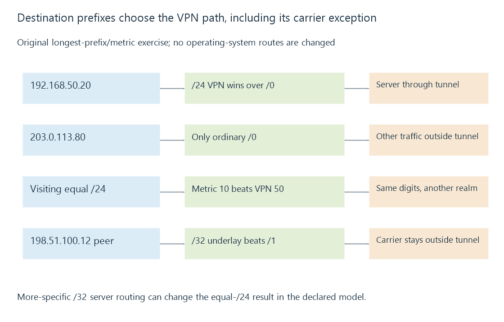

VPN routing, overlapping prefixes and split tunneling
VPN routing determines which destination prefixes use a tunnel, with route specificity, overlapping address realms and DNS policy separate from the tunnel’s connected state.
A connected VPN does not automatically receive every packet. The client’s routes and policy select which destinations use it.
Split tunneling sends selected traffic through the tunnel while other traffic follows another path. A full-tunnel design has a broader selection, but still needs the tunnel’s own outer connection to remain reachable.
Select the route for the actual destination
Use this original reduced client table:
{
"routes": [
{"prefix": "0.0.0.0/0", "path": "ordinary-gateway", "metric": 10},
{"prefix": "192.168.50.0/24", "path": "vpn", "metric": 50}
],
"serverDestination": "192.168.50.20",
"otherDestination": "203.0.113.80"
}
Under longest-prefix matching, the server uses the VPN /24. The outside documentation destination uses the ordinary default route.
The lower metric on that default does not override the more-specific /24. Metrics are compared within the relevant competing-route context.

Equal private ranges can describe different places
Suppose the visiting network also uses 192.168.50.0/24. The server’s home address and a visiting local address can now have equal numeric text.
Add a second matching /24 route through the local interface with metric ten. In this deliberately simple tie policy, that local route wins over the VPN /24 at metric fifty.
The request can then head toward the visiting realm instead of the home server. No amount of successful tunnel authentication changes what the chosen local route means.
A prefix is an address grouping; it is not a global site identifier. Reusing RFC 1918 ranges makes overlapping private realms possible.
A more-specific destination can change the choice
For a separate model, add a route for 192.168.50.20/32 through the VPN. That host route is longer than either /24 and selects the tunnel for that one address even with metric one thousand.
This illustrates specificity, not a universal configuration prescription. Some systems also use routing tables, policy rules or interface-bound sockets beyond this reduced model.
The chosen route still needs a reachable tunnel destination and permitted return path. A host route cannot distinguish two services simultaneously wanted at the same numeric address without another separation strategy.
A broad tunnel route needs an underlay path
One full-tunnel model can use the two half-space prefixes 0.0.0.0/1 and 128.0.0.0/1. Together they match the IPv4 address space more specifically than an ordinary /0 default.
The tunnel peer itself is also an IP destination. An outer packet accidentally routed into the tunnel it is supposed to carry creates a dependency problem.
This original carrier exception makes the intended separation explicit:
{
"fullTunnelPrefixes": ["0.0.0.0/1", "128.0.0.0/1"],
"peerAddress": "198.51.100.12",
"peerRoute": {"prefix": "198.51.100.12/32", "path": "underlay"}
}
The /32 keeps that peer on the underlay in this model. Actual clients can implement another appropriate mechanism; the numerical exception is not a packet capture or a native route command.
DNS policy is another selection
Routing a media address through the VPN does not determine which resolver supplies that address. A client can use a tunnel resolver, local resolver, encrypted resolver or application-specific resolution arrangement.
The resolver’s traffic then has its own route. Split DNS can deliberately supply another address depending on the chosen view.
See Also
- VPN access and the routed path to a media server
- Subnets, CIDR and matching routes
- DNS resolution, record types and cached answers
- Local and remote connections to Emby